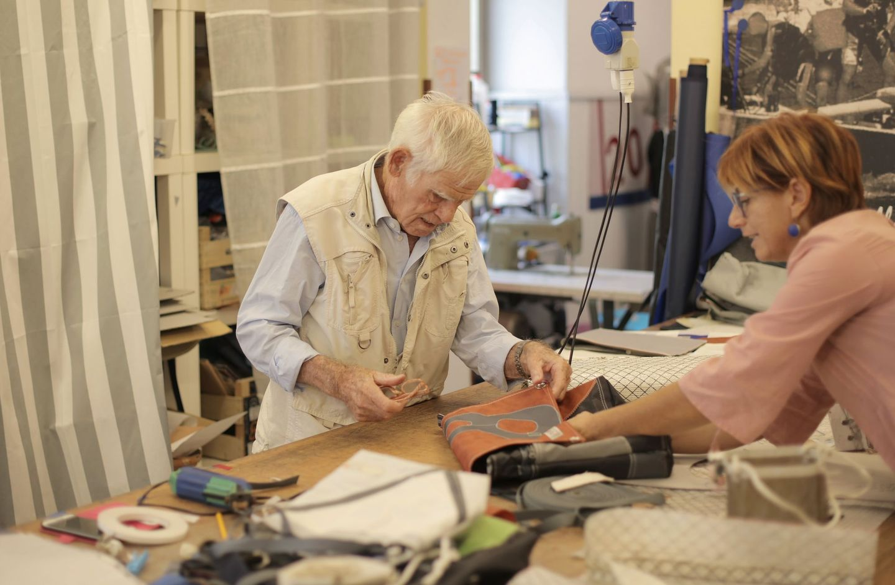
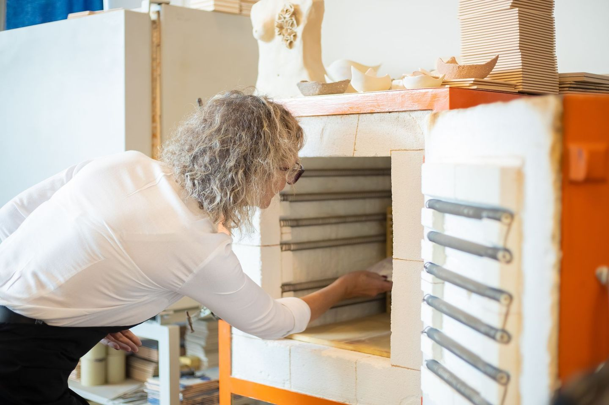

Desde el 19 de julio de 2026, una gran empresa ya no puede destruir en la Unión Europea la ropa y el calzado que no vende. Un taller que trabaja por encargo nunca ha tenido ese problema, porque no fabrica lo que nadie le ha pedido.
Esa diferencia es un argumento de venta, y casi ningún taller lo usa. En este artículo vas a ver qué significa de verdad trabajar por encargo, seis maneras de organizarlo sin quedarte sin ingresos mientras esperas pedidos, y dónde contárselo a tu cliente para que el plazo de espera juegue a tu favor.
Es para ti si haces piezas bajo pedido, en series cortas o con lista de espera, sea cual sea tu oficio.
Lo que a la industria le acaban de prohibir, tú no lo has hecho nunca
El artículo 25 del Reglamento europeo de ecodiseño prohíbe destruir prendas, complementos y calzado sin vender. A las grandes empresas les obliga desde el 19 de julio de 2026. A las medianas les llegará en 2030. Las pequeñas y las microempresas quedan fuera.
La norma existe porque el problema es grande. La Agencia Europea de Medio Ambiente calcula que entre el 4 % y el 9 % de los productos textiles que se ponen a la venta en Europa se destruyen sin que nadie los haya usado. Son entre 264.000 y 594.000 toneladas cada año.
La Semana Europea de la Prevención de Residuos de este año va de lo mismo. Su tema es la suficiencia material: evitar el residuo antes de que exista y reducir la producción que no hace falta, en lugar de limitarse a gestionar mejor lo que sobra.
Aquí está la paradoja. Tu taller casi seguro que es una microempresa, así que la norma no te obliga. Y como no te obliga, nadie te va a pedir que demuestres nada. Lo que la industria está aprendiendo a la fuerza, tú lo haces por pura lógica de taller, y por eso mismo no lo cuentas.
Lo circular no empieza cuando se recicla lo que sobra. Empieza cuando no se fabrica de más.
Qué cuenta como trabajar por encargo y qué no
Trabajar por encargo significa que la pieza se empieza cuando alguien la ha pedido. Dicho así parece sencillo, pero la mayoría de los talleres mezclan varias formas de producir. Antes de usarlo como argumento, sitúa cada una de tus piezas en esta tabla.
| Tu situación | Puedes decir | Ten cuidado con |
|---|---|---|
| SíEmpiezas la pieza cuando hay pedido | «Hecho por encargo. No fabricamos de más» | Dar siempre un plazo concreto |
| Con matizHaces pocas unidades y repones cuando se venden | «Series cortas. Reponemos bajo pedido» | No llamarlo encargo si la pieza ya estaba hecha |
| NoFabricas por previsión para una feria o una campaña | Nada sobre encargo. Cuenta qué haces con lo que no se vende | Decir «sin stock» cuando lo tienes |
La regla es una sola: dilo únicamente de las piezas en las que es verdad. Si la mitad de tu catálogo es por encargo y la otra mitad no, dilo de la mitad. Un cliente que descubre una exageración deja de creerse también lo que era cierto.
Seis modelos para organizar un taller que trabaja por encargo
El miedo de trabajar por encargo es conocido: si no hay pedidos, no hay ingresos, y si llegan todos a la vez, no das abasto. No hay un único modo de resolverlo. Estos son los seis modelos que más se repiten en talleres reales, y muchos combinan dos.
Encargo puro con señal
El cliente pide, paga una parte por adelantado y entonces empiezas. La señal cubre el material y te protege si el cliente desaparece. Funciona cuando cada pieza es distinta: calzado a medida, muebles, joyería de compromiso.
Cupo anual con agenda
Decides cuántas piezas puedes hacer bien en un año y abres la agenda en una fecha fija. Cuando se llena, se cierra. Convierte tu límite en parte del valor de la pieza y te permite saber en enero cuánto vas a ingresar.
Preventa por tandas
Abres pedidos durante unos días, cierras y fabricas exactamente lo vendido. Encaja con oficios que trabajan por lotes, como la cerámica, donde una hornada medio vacía cuesta casi lo mismo que una llena.
Serie corta con reposición bajo pedido
Tienes unas pocas unidades listas de tus piezas más vendidas. Cuando se agotan, la pieza no desaparece de tu tienda: pasa a fabricarse bajo pedido, con su plazo. Es el modelo más fácil de adoptar si hoy vendes desde un catálogo.
Encargo profesional
Tu cliente es un restaurante, un interiorista o una tienda que te pide una serie hecha para él. Son menos pedidos y más grandes, con conversación previa y pruebas. Da estabilidad, pero te hace depender de pocos clientes.
Reparación y mantenimiento
Arreglar lo que hiciste, o lo que hicieron otros, es encargo por definición: nadie repara por previsión. Llena los huecos entre pedidos grandes y es la forma más directa de alargar la vida de una pieza.
| Modelo | Cuándo cobras | Cuándo fabricas | Te encaja si |
|---|---|---|---|
| Encargo puro con señal | Una parte al pedir, el resto al entregar | Al recibir la señal | Cada pieza es distinta |
| Cupo anual con agenda | Reserva al entrar en agenda | Según el turno | Tienes más demanda que manos |
| Preventa por tandas | Todo al pedir | Al cerrar la tanda | Tu oficio trabaja por lotes |
| Serie corta con reposición | Todo al pedir | Solo cuando se agota | Vendes desde un catálogo |
| Encargo profesional | Por hitos acordados | Tras aprobar la muestra | Puedes producir series |
| Reparación y mantenimiento | Al entregar, con presupuesto previo | Al recibir la pieza | Tus piezas duran y vuelven |
Cada modelo tiene su forma de cobrar, su riesgo y su manera de contarse. Lo desarrollamos ficha por ficha en la guía descargable.
¿Cuál de los seis modelos es el tuyo?
Los hemos desarrollado ficha por ficha: cómo funciona cada uno, cuándo cobras, qué riesgo tiene y la frase exacta para contárselo a tu cliente. Diez páginas, con ejemplos reales.
Descargar la guía →
Cinco sitios donde contárselo a tu cliente
De poco sirve trabajar así si tu cliente no lo sabe. Estos son los cinco sitios donde una frase cambia cómo se lee tu precio y tu plazo.
- Tu web. Una página o un bloque titulado «Cómo trabajamos», con el proceso en tres o cuatro pasos y el plazo habitual. Es lo primero que busca quien duda.
- La ficha de cada pieza. El plazo va junto al precio, no escondido en las condiciones de envío. «Se fabrica para ti en 15 días» informa y a la vez explica por qué cuesta lo que cuesta.
- La etiqueta. Una línea basta: «Hecho por encargo. No fabricamos de más». Quien recibe la pieza como regalo también se entera.
- El presupuesto. Es el documento que tu cliente lee con más atención. Añade una frase sobre el plazo y otra sobre la señal, con su motivo.
- La conversación sobre el plazo. Cuando te pregunten cuánto tarda, no empieces pidiendo disculpas. Da la fecha y explica qué ocurre en ese tiempo.
El coste honesto: tu cliente espera
Trabajar por encargo no es una virtud, es una forma de producir, y tiene un precio: el cliente no se lleva la pieza hoy. Esconderlo es el error. El plazo bien contado deja de ser un defecto y pasa a ser la prueba de que la pieza se hace para esa persona.
Tres cosas hacen llevadera la espera:
- Una fecha, no un «pronto». Di el día de entrega y cúmplelo. Si prevés un retraso, avisa antes de que te pregunten.
- Una señal de vida a mitad de camino. Una foto de la pieza en proceso vale más que cualquier explicación.
- Una condición clara desde el principio. Deja por escrito qué pasa con la señal si el cliente cancela.
La ley española de consumidores excluye del derecho de desistimiento los bienes hechos según las especificaciones del cliente o claramente personalizados (artículo 103, letra c). Una pieza a medida, por tanto, no suele poder devolverse sin motivo como una compra por internet. Confírmalo con tu asesoría e indícalo en tus condiciones.

Tres talleres y una marca que ya trabajan así
👞 Enrile Artesanos
Sevilla · CueroAntonio García Enrile hace 24 pares de zapatos al año, ni uno más. Abre la agenda en enero y la de 2026 estaba casi completa desde el principio, por la lista de espera del año anterior. Es el modelo de cupo anual llevado al extremo.
Fuente: El Pespunte🪵 Artific
Antillón (Huesca) · MaderaCarlos Mur montó su carpintería en un pueblo de unos 130 habitantes y recuperó a clientes que le estaban esperando. Hace muebles únicos, escaleras y menaje, y alrededor del 30 % de su trabajo son arreglos. Encargo y reparación conviven en el mismo taller.
Fuente: El Asombrario🏺 Gonzalo Martín
La Orotava (Tenerife) · CerámicaDiseña vajillas para cocineros. Cada encargo empieza hablando con el chef para saber qué necesita y sigue con pruebas hasta dar con la pieza. Es el encargo profesional: pocas series, hechas para un cliente concreto.
Fuente: Guía Repsol🧥 Paynter Jacket Co.
Reino Unido · ChaquetasBecky Okell y Huw Thomas lanzan cuatro tandas al año. Abren pedidos, cierran y solo entonces fabrican las chaquetas vendidas, con el tejido encargado en la cantidad justa. Lo cuentan abiertamente como su forma de no generar sobrantes, y envían noticias semanales desde la fábrica mientras el cliente espera. Es una marca pequeña que produce en una fábrica, no un taller artesano, pero es el ejemplo más claro de preventa por tandas que hemos encontrado.
Fuente: TalaEse último detalle es el que importa. Los tres talleres españoles trabajan por encargo, pero no lo presentan como una ventaja ambiental. Lo hacen y no lo dicen, que es exactamente la situación de la mayoría.
Cinco errores comunes
Decirlo sin que sea verdad. Poner «hecho por encargo» en piezas que ya tenías fabricadas es engañar. Dilo solo donde se cumple.
Contarlo como un sermón. «No contribuimos al sobreconsumo» suena a reproche. «La hacemos para ti» suena a ventaja. Tu cliente compra la segunda.
Esconder el plazo. Si el cliente lo descubre después de pagar, la espera se vive como un fallo. Si lo sabe antes, la vive como parte del proceso.
No cobrar señal. Empezar una pieza a medida sin nada por adelantado traslada todo el riesgo a tu taller. La señal no es desconfianza, es el compromiso de las dos partes.
Aceptar todos los encargos. Sin un límite, los plazos se alargan, la calidad baja y el argumento se vuelve en tu contra. Decidir cuántas piezas haces al mes también es parte del oficio.
Hoja de ruta de cuatro semanas
Repasa tu catálogo pieza a pieza con la tabla de arriba.
Resultado: sabes de qué piezas puedes decir que son por encargo.Decide cuál de los seis describe mejor cómo trabajas hoy y cuál querrías probar.
Resultado: una forma de cobrar y un plazo por tipo de pieza.Redacta tu bloque «Cómo trabajamos», añade el plazo a las fichas y la frase a tu presupuesto.
Resultado: tu cliente lo lee antes de preguntarlo.Usa la nueva respuesta sobre el plazo con los tres próximos clientes y apunta cómo reaccionan.
Resultado: una frase ajustada con conversaciones reales.Al final de estas cuatro semanas tendrás tu forma de producir convertida en un argumento escrito, visible y probado.
¿Cuál de los seis modelos es el tuyo?
Descargar la guía →Preguntas frecuentes
¿Puedo decir que trabajo por encargo si tengo algo de stock?
¿Cuánta señal debo pedir?
¿Me afecta la prohibición europea de destruir producto no vendido?
¿Y si el plazo me hace perder ventas?
¿Esto solo vale para la moda?
Lo que no se fabrica no hay que destruirlo. Europa ha necesitado una ley para que las grandes empresas lleguen a esa idea, y tu taller la aplica cada vez que espera un pedido para empezar una pieza.
Te falta la segunda mitad: decirlo. Elige tu modelo, escribe tu frase y ponla donde tu cliente la vea. Si quieres que lo miremos juntos, el Diagnóstico 3D empieza justo por ahí: por lo que tu taller ya hace bien y todavía no cuenta.
Fuentes
- Comisión Europea, nota del 9 de febrero de 2026 sobre la prohibición de destruir productos no vendidos: ec.europa.eu
- Agencia Europea de Medio Ambiente, The destruction of returned and unsold textiles in Europe’s circular economy: eea.europa.eu
- Semana Europea de la Prevención de Residuos (EWWR), tema de 2026: suficiencia material: ewwr.eu
- BOE, Real Decreto Legislativo 1/2007, texto refundido de la Ley General para la Defensa de los Consumidores y Usuarios (artículo 103): boe.es
- El Pespunte, sobre Enrile Artesanos: elpespunte.es
- El Asombrario, sobre Artific: elasombrario.publico.es
- Guía Repsol, sobre el taller de Gonzalo Martín: guiarepsol.com
- Tala, entrevista a Paynter Jacket Co.: tala.co.uk